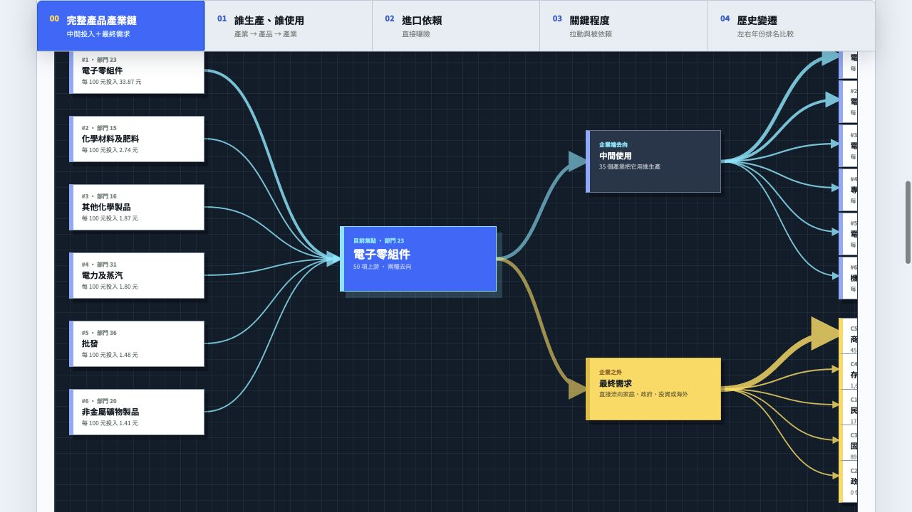
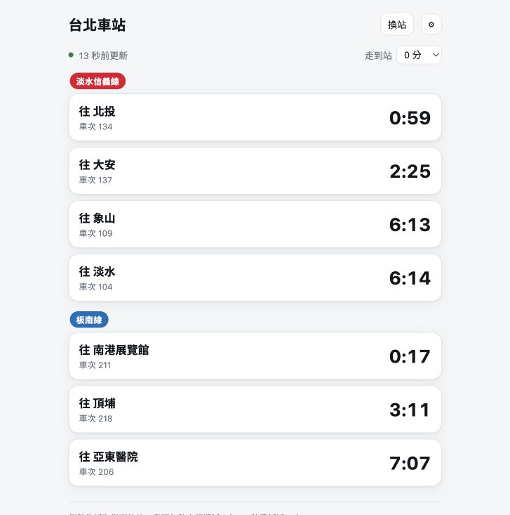
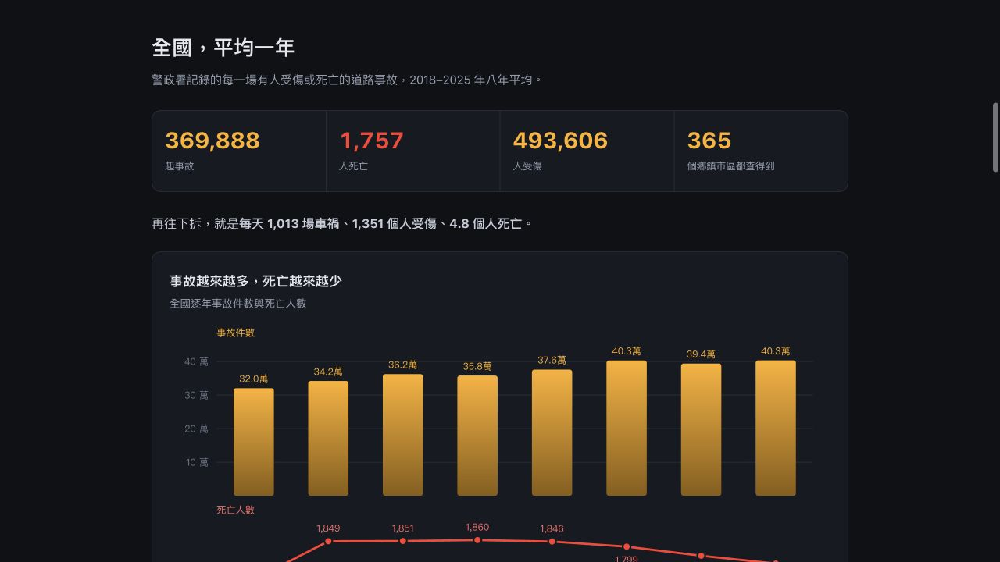

01
選擇 63 類產品中的任一項，就能沿著上游投入 → 生產 → 中間使用與最終需求追一條完整產業鏈，也能比較直接進口依賴、產業關聯程度與 105、110 年的排名變化。
實際網站畫面：電子零組件的完整產業鏈2026/8/21 擷取

2026/8/19–8/24・截至 8/24
歐噴資料庫裡的資料就像食材，大家可以帶回去做分析、串接與視覺化；我們也會把資料做成可以直接操作的應用，像開一間間資料餐廳，讓不想自己下廚的人，也能直接使用現成的資料料理。
DATA RESTAURANTS
同一批開放資料，經過清理、關聯與介面設計後，可以變成產業研究、通勤判斷與道路安全工具。
選擇 63 類產品中的任一項，就能沿著上游投入 → 生產 → 中間使用與最終需求追一條完整產業鏈，也能比較直接進口依賴、產業關聯程度與 105、110 年的排名變化。

可任選臺北捷運 6 條路線中的一座旅客車站，用站名或車站代碼搜尋，查看列車行駛方向、車次與到站倒數；填入步行到車站的時間後，介面還會直接標記這班車是否趕得上。資料來自臺北捷運即時資料 API。

把 2018–2025 年全國事故資料去重、合併鄰近座標後，整理成可搜尋 365 個行政區的熱點。可依年份、時段、A1／A2、車種、碰撞型態與道路型態篩選，查住家或通勤路線附近 1.2 公里的高風險位置。

DOCUMENTATION UPDATE・1 DATASET
台灣公司資料 API 先前已經上架，本週沒有重複新增資料；這次更新是把查詢方式、欄位解讀、應用方向與使用限制補充得更清楚。歐噴資料庫的特色是，除了資料以外，也會由人工與 AI 協作補上資料特性與領域知識，讓 AI agent 不會誤用資料。
tw.openfun~api~company
這份資料先前已經上架，並持續每日更新。本週補強的是說明文件：整理公司法登記的公司與商業登記法下的商號／行號如何查詢，並說明如何依統編、公司名、資本額、自然人、法人與母公司分公司關係使用資料。
查看資料集 ↗實際查詢・台積電 22099131
統編 22099131加上 with_changelog=true，還能取得歷次欄位變更；例如代表人紀錄可追到張忠謀、劉德音至魏哲家的更替。
/api/show/{統編}單一公司完整資料與變更紀錄/api/search?q=名稱搜尋公司或商號/api/name?q=姓名查自然人出現在哪些公司/api/fund?q=法人查法人在哪些公司持有席位/api/branch?q=母公司統編查母公司下的登記分公司/api/bulkquery・bulksearch一次查多個統編或完整名稱用統編核對名稱、地址、負責人、登記狀態與資本額，做供應商或合作對象基本查核。
從董監事、經理人與代表法人欄位，整理一個人或一個法人橫跨哪些公司。
統一超商母公司統編在 8/21 查到目前 8,456 筆分公司登記；變更紀錄則可追地址、代表人或資本額何時改動。